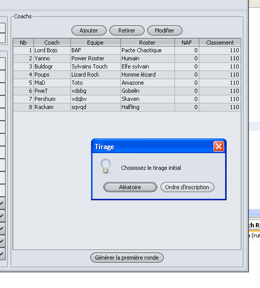
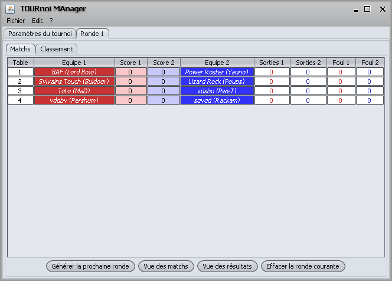

Pour générer une ronde il faut distinguer la première ronde des suivantes.
Une fois tous les coachs inscrits, il suffit, dans longlet
"Paramètres" de cliquer sur générer la
première ronde en choisissant le type d'affectation initiale.

Pour les autres rondes, il suffit de cliquer sur le bouton
"Générer la ronde suivante" dans l'onglet de la
ronde et le sous onglet "Matchs".
